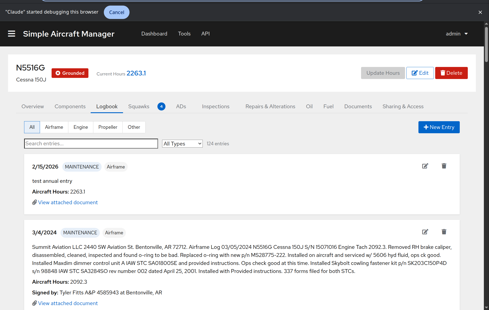

Logbook¶
The Logbook tab is a chronological record of maintenance performed on the aircraft, including inspections, parts replaced, and mechanic signoffs.
{kind=link}
Logbook entries document maintenance events – they are not per-flight records.
Sub-Tabs¶
The logbook is organized into sub-tabs that filter entries by log type:
All – Shows all entries regardless of type.
AC (Airframe) – Airframe maintenance entries.
ENG (Engine) – Engine-related maintenance.
PROP (Propeller) – Propeller maintenance.
OTHER – Entries that don’t fit the above categories.
Searching and Filtering¶
Use the search bar to find entries by text content. You can also filter by entry type using the dropdown:
Maintenance
Inspection
Flight
Hours Update
Other
The total entry count updates as you filter.
Creating an Entry¶
Click New Entry on the Logbook tab (owners only).
Fill in:
Date – The date the maintenance was performed.
Text – A description of the work performed.
Log Type – Select AC, ENG, PROP, or OTHER.
Entry Type – Select Maintenance, Inspection, Flight, Hours Update, or Other.
Aircraft Hours at Entry – The aircraft’s total hours at the time of the entry.
Signoff Person – The mechanic or IA who signed off the work.
Signoff Location – Where the work was performed.
File Attachment – Optionally attach a scanned copy of the logbook page.
Related Documents – Link to existing documents in the Documents system.
Click Save.
Viewing Entry Details¶
Each logbook entry is displayed as a card showing:
Date and entry type/log type labels.
Description of the work performed.
Aircraft hours at the time of the entry.
Mechanic signoff information.
Attached document link (if any) – click to view the scanned page.
Related documents links – click to view linked documents.
Loading More Entries¶
Logbook entries load in pages. If there are more entries available, a Load more button appears at the bottom of the list.
AI-Assisted Import¶
For digitizing physical logbooks, see Logbook Import.